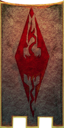

| Buckmoth Legion Fort |
| Alignment: Imperial |
| Region: Ashlands |
|
Transport:
Almsivi Intervention:
Divine Intervention:
|
Services:
|
|  |
Buckmoth Legion Fort |
Courtyard |
Buckmoth Legion Fort is located due south of Ald'ruhn and west of the Ramimilk shrine, on the road to Ghostgate. Services available include an enchanter, trader, apothecary, healer, drillmaster, battlemage, smith, and Imperial Cult altar.
This fort is the residence of Imsin the Dreamer, one of the Imperial Legion Quest givers. Shardie is the Master Trainer of Block, located outside in the courtyard.
There is a route off the foyada leading down to the Ghostfence that will take you to Ghostgate, which rises up to the Ghostfence briefly, so you can peer through at the quaint, curious and homicidal inhabitants of the Red Mountain region, before dropping south and skirting the Daedric shrine of Ramimilk as it turns west again. The Foyada Mamaea leads you to Balmora and beyond.